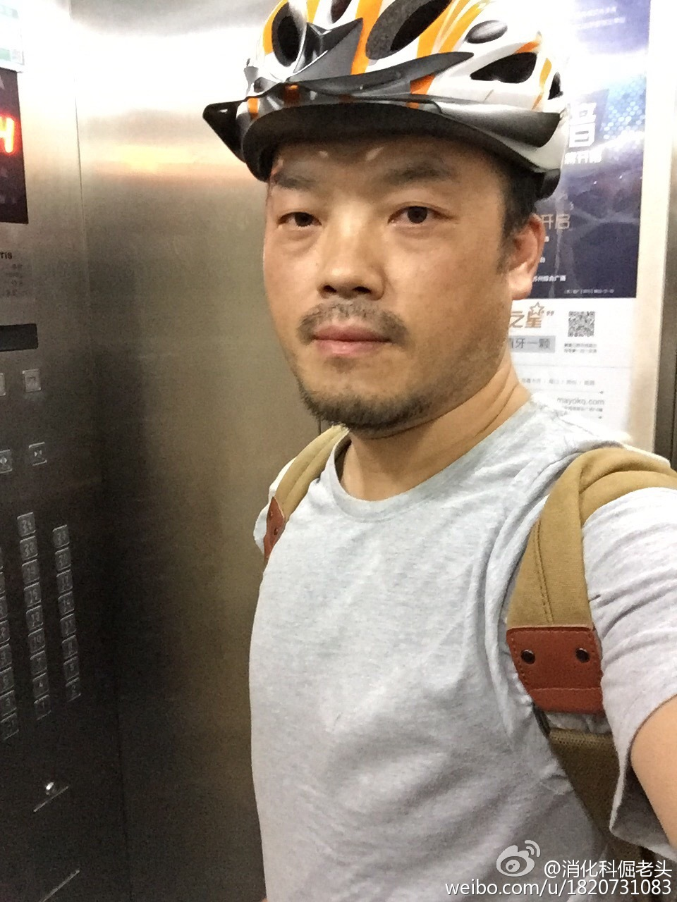

知乎一直标榜有自己的价值观，成员对这类场所的态度是合则来，不合则去。如果在这种环境中争论，落败的一方会认为自己被排挤，或遗弃，或背叛了。微信和QQ就是定位成连接的工具，没有情感或价值观的绑架。@张亮:想到一个问题：现实生活中，你跟谁产生冲突（吵架、分手），这个地方会让你留下情绪的记忆。甚至很多人因为知乎上言语不合而黯然离去。但为什么 QQ 和微信没有这种属性呢？年轻人不会因为在微信上分手而视它为伤心地，仍可以继续没心没肺的用它，why？
向朋友打听个人名，还未说什么事儿，朋友就提醒说此人极不靠谱，做过伪造合同的事情。我也乐了，说跟此人见面聊了有半个小时，不靠谱大忽悠的感觉就越来越浓。事后找朋友求证，也是想验证下我现在看人的能力有无长进。
大学同学说现在她已经是学校体系里收入最高的一阶，该拿的职称也到手了，周围有同事说可以不那么辛苦了，接下来混混就可以。同学说自己还是想做些事情，混有什么意思。-- 聊天中我很想说但没说出的话是：远离那些说混的同事。她在二线城市的学校里，人情世故未必能像北上广这类地方放得开。
如果你的交往圈只是限制于亲友，同学，同事，所居住小区，通常你也就被这些所限制住了。从接触到互联网就被吸引，是发现“世界很大”这事儿是真的，真实到你可以触摸到各色活生生的人。书籍能扩大视野，但少了互联网的连接和互动。@Ada李力:大学同学说现在她已经是学校体系里收入最高的一阶，该拿的职称也到手了，周围有同事说可以不那么辛苦了，接下来混混就可以。同学说自己还是想做些事情，混有什么意思。-- 聊天中我很想说但没说出的话是：远离那些说混的同事。她在二线城市的学校里，人情世故未必能像北上广这类地方放得开。
微信熟人圈里，大概不少人觉得关注你是施恩，你关注我是回报，或者是应该有的交换。如果我加你好友，而你回头拉黑我，那我不但吃亏了，心灵还受到了伤害，当然要追究。-- 俺现在更喜欢玩微博。---:抱歉，作者已设置仅展示半年内微博，此微博已不可见。
公共厕所冲不掉的上一位如厕人遗留的SHIT，也有这种尴尬。@消化科倔老头:回到小区，负一层等电梯。电梯在一楼停了停，接着到负一。一进电梯，一股浓烈的脚臭味呛得我差点呕吐，所幸就我一人，忍不住骂了一句：我操！电梯突然五楼停住，门打开，是位美女，一进电梯就连忙用手捂住口鼻，背朝我，几次三番回过头，欲言又止。我委屈地眼泪差点就要流下来，几次三番，也是欲言又止 